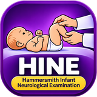

Hammersmith Infant Neurological Examination
HINE v 20.12.23 — Scoring, guidance, risk interpretation, training & PDF export | Hospital Miri, Department of Neonatology
Step through the setup and the technique for each section. Tap a slide to enlarge it. Use ← → keys on a computer.
Choose an item to see real infants at each score, beside the proforma drawing. Tap any picture to enlarge it, then pinch or double-tap to zoom. Faces are masked in the source material.
Optimality, CP cut-offs, preterm medians, asymmetry and the Scoring Aid, plus the factors that affect scores in preterm infants.
Three worked cases. Amber dots mark checkpoints: the slide stays blurred until you choose an answer.
Training content: HINE Introduction Webinar (July 2024), HINE Scoring Examples, and Case Studies 1–3 by Fehlings D, Banihani R, Church P, Luther M, Lam-Damji S, Makino A, Thomas K, Mangat B (Holland Bloorview / Sunnybrook / Kids Brain Health Network / CP-NET). Images are reproduced from those materials for internal training only. Proforma: Mac Keith Press HINE v20.12.23. Scoring Aid: Fehlings et al. Dev Med Child Neurol 2024 (doi:10.1111/dmcn.15977).
Undress child to vest and nappy. Assess leg posture in all positions available (lying, sitting, standing) and average scores if they differ. Always record asymmetries.
Observe throughout the visit. Not a substitute for GMA. Score 2 if movements are not optimal but do not clearly fall into score 1 category.
Perform with child lying on a flat surface. Always record asymmetries. If response is asymmetrical across two boxes, average the two scores (e.g. score 2 R + score 1 L = 1.5).
Record observed or reported level. Ask about toe-touching, rolling direction, bottom shuffling. Note age of independent walking (5 steps). Record any asymmetry.
Conscious state 1–6, emotional state 1–5, social orientation 1–4. Not part of global score but important clinical record.
| Corrected age | Optimality (term) | CP cut-off | Correction: very preterm (≤32w) | Correction: late preterm (33–36w) |
|---|---|---|---|---|
| 3 months | ≥ 67 | ≤ 56 | −3.5 pts | −3.5 pts |
| 6 months | ≥ 70 | ≤ 59 | −3 pts | −3 pts |
| 9 months | ≥ 73 | ≤ 62 | −2.5 pts | −1.5 pts |
| 12 months | ≥ 73 | ≤ 65 | −2 pts | −1 pt |
| 18 months | ≥ 74 | < 40 (non-ambulant CP) | — | — |
Optimality = 10th centile of healthy term infants (Haataja et al. 1999, 2003). CP cut-off = high probability of CP in at-risk infants (Romeo et al. 2013). Preterm corrections = median difference (Romeo et al. 2016, 50th centile). Asymmetry score ≥ 4 = significant asymmetric neurological performance; refer to early intervention for Baby-CIMT/bimanual therapy regardless of age (HINE Scoring Aid, Fehlings et al. 2024; Pietruszewski et al. 2021). When an asymmetry is ticked, score R and L separately; the item score is their average (e.g. 2 + 1 = 1.5). If > 5 items are unscored, calculate global score out of 63 and document.